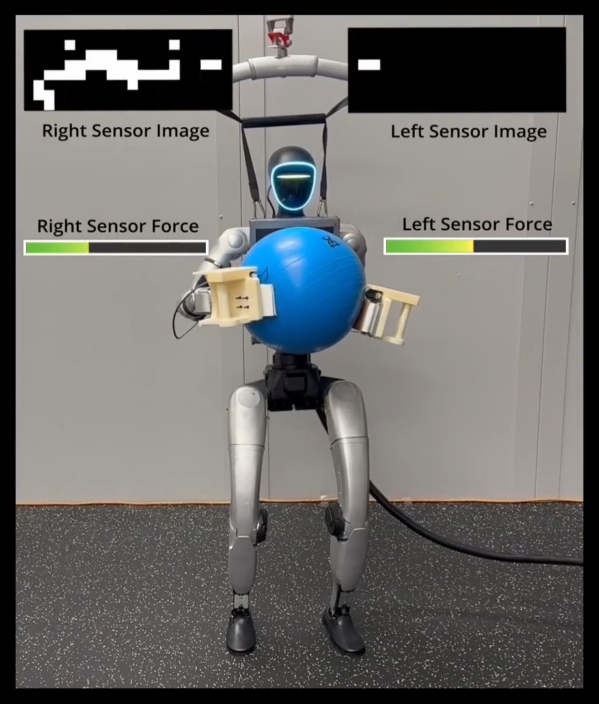
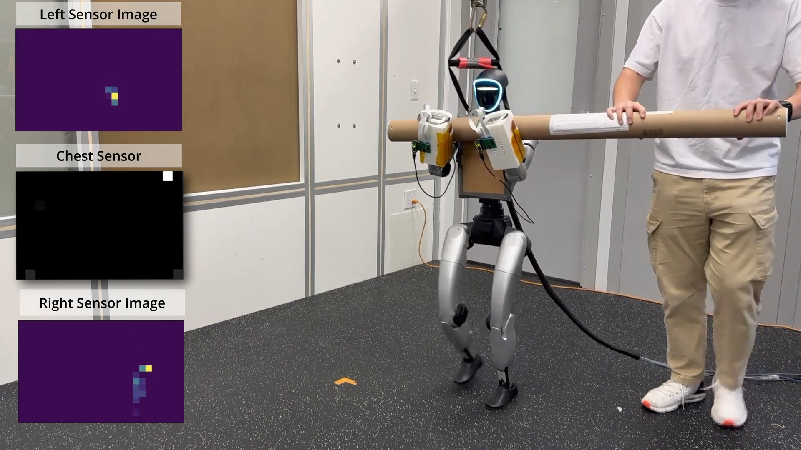
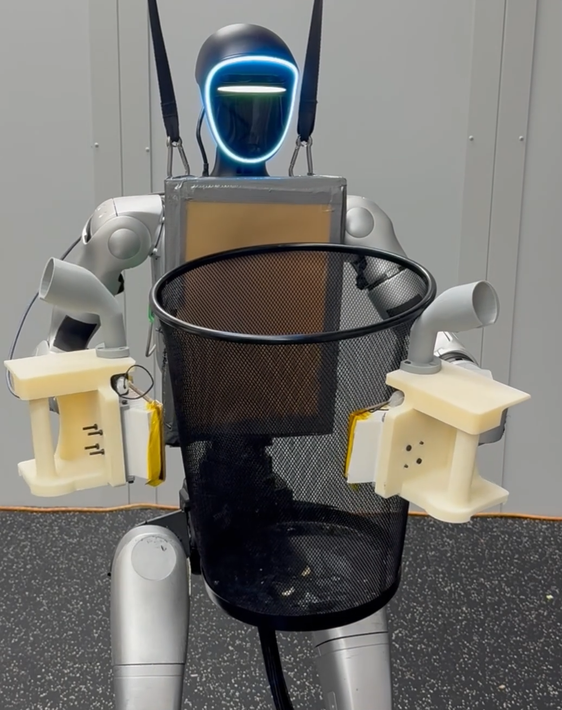

Whole Body Tactile Universal Manipulation Interface
While working with the Georgia Tech LIDAR group I was able to contribute to a project focusing on using tactile sensors on more than just the hands of humanoid robots, trying to ascertain whether it was useful for improving manipulation control. I contributed to the project hardware and sensing integration. We submitted to CoRL and are waiting to hear back.

We tested the robot on five different tasks throughout the project: yogaball rotation, bucket rotation, pillow rotation, beam carrying, and table carrying. I was directly involved with the design and fabrication of the sensing hardware used throughout the project. We used thin film tactile sensors on modular and removable 3D printed components. This allowed us to have a highly versatile kit of swappable tactile hardware that we could use to cover the hands, chest, and forearms of the UNITREE G1 we were using. I also contributed to the integration of these pieces of hardware into the software used by the team. This included calibration and datagathering about the sensors, developing and tweaking sensor pipelines and drivers, and setting up ROS2 integrations.
The overall system pipleine takes tactile readings, robot sensor data, and target end effector positions. Part of the goal of the project was to use predominantly human-gathered data when training the robot's action planner, so corrections needed to be made to ensure that the correct motions would be completed. A multilayer pretrained pose correction system was implemented to deal with this. The corrected target pose were used in a force-aware planner, that used a ViT encoder and a diffusion policy basis to plan future robot trajectories.


An admittance controller and an IK controller were used to convert the planned trajectories into actual achievable motions, while still being aware of perturbations. Low level control was handled bu joint-level PD controllers. Overall, the final pipeline was successful at proving that adjusted human data could be used to train a control policy, and that tactile sensing was useful for maintaining contact in manipulation tasks.